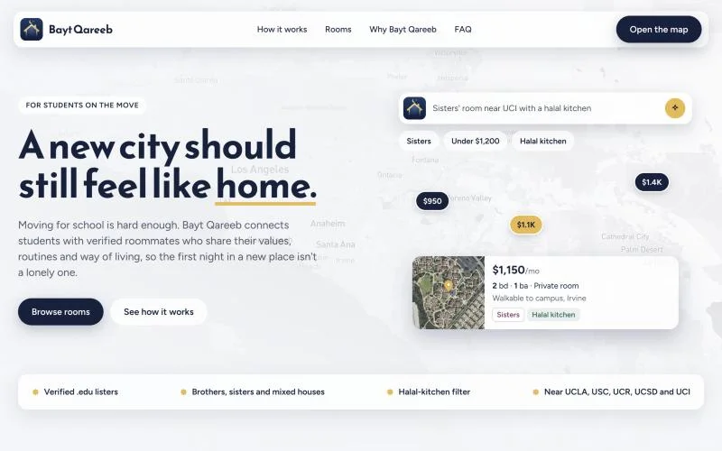

Bayt Qareeb
A map-first room and roommate finder for Muslim college students, open only to verified .edu students. We built it on November 6, 2026, for Track 1, Manara Network: Bridging Campuses.
- Result
- Prize winner. The app is live on Vercel with 80 seed listings across 7 campuses.
- What I did
- I set up the first working MVP, then built the map UI and design: price pins, the search bar and filter pills, the price slider, place search, and photo tours. I also hardened CI, fixed the Vercel build, and wrote the README.
- Stack
- Next.js 14, React, TypeScript, Tailwind, Mapbox GL / react-map-gl, Prisma, Supabase Postgres, Clerk, Claude Haiku, GitHub Actions, Vercel
The problem
Moving to a new campus means finding housing in an unfamiliar city, often with strangers and usually through scattered group chats. Transfer students have it worse. Muslim students also need details that generic listing sites don't show: brothers-only or sisters-only houses, a halal kitchen, roommates with a similar routine.
What it does
- Sign up with a .edu email. Clerk sends a one-time code that proves you own the inbox.
- The map opens on your campus: UCLA, USC, UC Riverside, UCSD, UC Irvine, UC Davis, or Stanford.
- Filter by household (brothers, sisters, or mixed), home type, price range, private room, halal kitchen, and pets, or type a sentence and let the AI search set the filters.
- Open a room to see a photo tour, your share of the rent, utilities, and house rules, then contact the lister.
- Post, edit, and delete up to 5 of your own listings.

How it works
The AI search only fills in filters. The server sends your sentence to Claude Haiku with a fixed JSON schema (max rent, household, room type, home type, pets, halal kitchen, place). A validator drops unknown keys and bad values, and the app applies the result with the same logic the filter pills use. The model never sees listings and can't write to the database.
The .edu rule is enforced on the server. Middleware requires sign-in for every page except the landing and auth pages, and every page and API route also checks that the verified primary email ends in .edu. Anyone else gets a "Students only" screen, and the APIs return 403. Edits are owner-only in the database query, coordinates come from server-side geocoding, and row-level security is on for the listing and user tables.
My part
From my commits (25 of 61):
- The first MVP. The initial commit: a Next.js map UI, the Prisma schema and seed data, the listings API, the first .edu signup check, a data validator, and the CI workflow.
- The map. Mapbox with zoom-based price pins and an accessible mobile sidebar, then a full-bleed muted map with one floating search bar (type to filter, Enter for AI search), pill dropdowns, and a floating results panel.
- Layout and controls. A split layout from iPad up, compact phone cards with 44px touch targets, a faster listings API, a min/max price slider, full-sentence searches that wait for Enter instead of filtering to zero, and place search that flies the map to a city or campus through Mapbox geocoding.
- Listings. Streets map, photo tours (4 photos per listing plus a location slide), home types (house, apartment, condo, townhouse) with a filter wired into the AI search, and photos and home types for the NorCal listings. I also made the new SVG logo and favicon.
- CI and deploys. Least-privilege permissions, SHA-pinned actions, npm ci, audit, secret scan, CodeQL, and Dependabot. I fixed the Vercel build (fonts through the Google Fonts stylesheet, the Mapbox token name) and added a fallback to seed listings when there's no database.
- Docs. The README for judges (live demo, test sign-in steps, setup), the screenshots, and the MIT license.
Teammates moved sign-in to Supabase and Clerk with the server-side .edu gate, and built the natural-language search, the post-a-room pages and API, the 80 seed listings, and the landing page.
Open items
- Privacy: rooms that students post show the full matched address and a satellite view of the block. The fix (an approximate pin, no house number, no satellite image) is first on the roadmap.
- Geocoding and AI search have no rate limit.
- The 5-listing cap is a count-then-insert check, so two requests at the same moment could both get through.
- Posting a room only accepts Southern California addresses.
- Listing photos are stock images, not the actual buildings.
We haven't tested the full sign-up flow on the live site, the "Students only" screen, or the AI search from the UI in a real signed-in browser session.
Next
- Rate limits on geocoding, AI search, and posting.
- Campuses beyond California.
- Saved rooms and in-app messaging.
- Real photo uploads by listers.